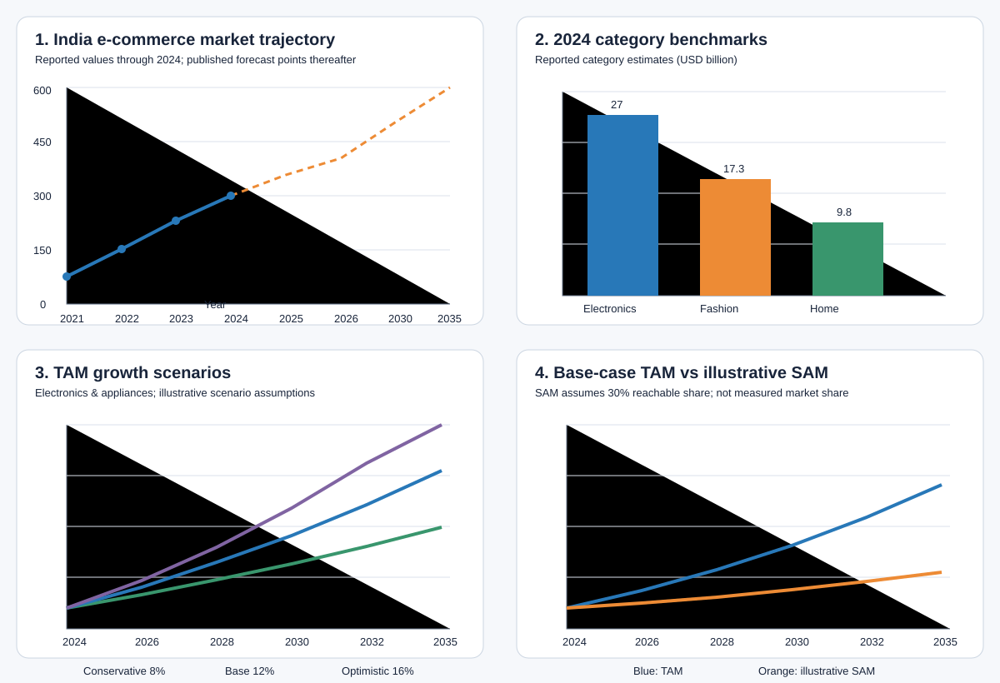

This preview contains derived market visuals from the included India market benchmark dataset. Reported values and published forecasts are labelled separately. TAM/SAM outputs use explicit scenario assumptions.

From the python/ directory, install requirements once using pip install -r requirements.txt, then run python run_project.py. The script writes six PNG charts and three CSV tables under reports/.
No transaction-level order-value records or consumer survey responses are included. Therefore, a transaction histogram and customer segmentation clusters are not generated; those would require real observations. The 30% SAM reachability and 8%, 12%, and 16% growth rates are illustrative scenario assumptions, not official forecasts.
Sources are documented in the Python project data file and the original project README.